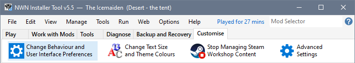
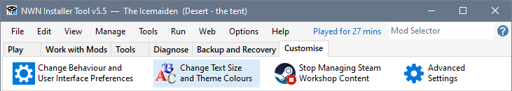
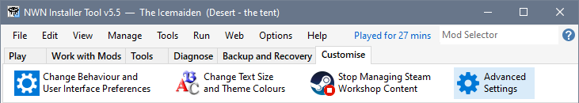

Select the Customise Tool tab and click Change Behaviour and User Interface Preferences to review some of the Settings you may want to change before you start using the Installer Tool.

You can change what the Installer Tool does on startup as well as specify what what happens after creating Mod Installers and starting or closing Neverwinter Nights. These are the settings I use...

Change the thickness of the line separating the various panels if you have difficulty positioning the mouse over the sizing-lines separating panels.

Selection
Opens the Item Selection Preferences dialogue.
Advanced
Opens the Advanced Settings dialogue.
Apply
Applies the Behaviour and User Interface settings you have specified.
Cancel
Closes Basic Settings without taking any action.
Select the Customise Tool tab and click Change Text Size and Theme Colours to make the Installer Tool's text more readable.

See Change text size and Change Theme Colours for more information.
Select the Customise Tool tab and click Manage Settings or click the Advanced button in the Basic Settings window to have full control over the options you want to review. See Review options with Advanced Settings for more information.

Run the Installer Tool for the first time
Review Settings you may want to change
Deal with existing installed Mods